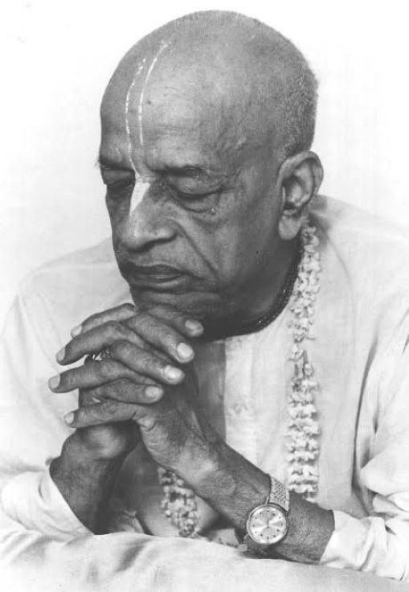

Unity in diversity

If you all leaders cannot work together, then how can you expect the others to cooperate with you? Differences may be there, but still you have to cooperate together, otherwise where is the question of my being relieved of so many problems and decisions?
~ Letter to: Ramesvara, Vrindaban, 15 September, 1975.
Now this displeasing of godbrothers has already begun and gives me too much agitation in my mind. Our Gaudiya Math people fought with one another after the demise of Guru Maharaja but my disciples have already begun fighting even in my presence. So I am greatly concerned about it.
Following in the footprints of Lord Caitanya Mahaprabhu:
trnad api su-nicena taror iva sahisnuna
amanina manadena kirtaniya sada harih
"One should chant the holy name of the Lord in a humble state of mind, thinking oneself lower than the straw in the street; one should be more tolerant than a tree, devoid of all sense of false prestige and should be ready to offer all respect to others. In such a state of mind one can chant the holy name of the Lord constantly."
We must always remember this verse and be as tolerant as the tree, as we execute the Krsna consciousness movement. Without this mentality we cannot be successful.
Material nature means dissension and disagreement, especially in this Kali yuga. But, for this Krsna consciousness movement its success will depend on agreement, even though there are varieties of engagements. In the material world there are varieties, but there is no agreement. In the spiritual world there are varieties, but there is agreement. That is the difference. The materialist without being able to adjust the varieties and the disagreements makes everything zero. They cannot come into agreement with varieties, but if we keep Krsna in the center, then there will be agreement in varieties. This is called unity in diversity.
~ Letter to: Kirtanananda, Bombay 18 October, 1973